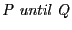
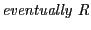
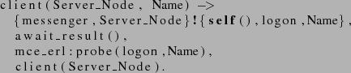
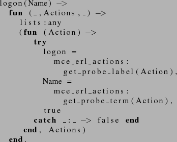

Next: Using probe states to Up: Model checking using Büchi Previous: Model checking using Büchi
One possible and more precise description of the aforesaid property is the following:
if user1 does not send a message m to user2 until user2 is logged on, then if user1 does send a message m to user2 then eventually user2 receives the message m.
The formalization in LTL of the above formula can be found in the ``message_received1()'' function in the run.erl file.
"not P until Q => (eventually P => eventually R)"
The predicates P, Q and R have the following meaning in the concrete scenario where a user clara that first sends a logon message to the messenger server, then sends the message ``hi'' to the user fred and finally sends a logoff message, and a user fred that sends a logon message and a logoff message:
Linear Temporal Logic is defined over program runs:  holds for a program run if at every state of the run the predicate holds, until a state in the program run is encountered where the predicate holds (and must hold for some state on the run).  holds for a program run if the predicate holds at some program state in the run. Normal logical implication is denoted by the ``'' symbol.
For simplicity and modularity the property and the predicates present in the property are considered separately. To write the predicates or basic facts in the formula (user1 sends a message m to user2, etc.) McErlang allows access to the program states and the sequence of actions labelling transitions between states. These predicates can be written directly in Erlang, using all the expressiveness of the language. For example, a predicate stating that a user is logged on can be implemented as a function ``logon'' that returns true when an action corresponding to the user being logged on is found labelling a transition. The process of searching for the desired action is simplified if we annotate the program with what we call ``probe actions'', which serve to make the internal state of a program visible to the model checker in a simple fashion.
In the messenger example we have annotated the program code with probe
actions that are referred to in the predicates. For example, the
following probe action has been added in messenger.erl to the client
function for expressing that a user is logged on:
emph=mce_erl,probe,probe_state,has_probe_state,del_probe_state,emphstyle=

From the example we can see that a probe action, as created using the @mce_erl:probe@ function, has two arguments, corresponding to a label naming the particular probe, and an arbitrary Erlang term as probe argument.
The code implementing predicates (basicPredicates.erl) is in the
McErlang/examples/Simple_messenger directory. For example, the ``logon'' predicate is
implemented as the ``logon'' function which provided a user name as
argument, defines an anonymous function that returns true if its
second argument is a sequence of actions containing a logon probe
action corresponding to a logon by the named user:

Similarly, probe actions and predicates have been written for the other predicates appearing in property (1).
To model check property (1) on a concrete scenario we use the function message_received in run.erl.
Eshell V5.6.5 (abort with ^G)
1> run:message_received1().
Starting McErlang model checker environment version 1.0 ...
Starting mce_alg_buechi(void) algorithm on program
scenario:start([[{logon,clara},{message,fred,"hi"},logoff],[{logon,fred},logoff]])
with monitor messenger_mon({void,[{'P',#Fun<basicPredicates.5.8045620>},
{'Q',#Fun<basicPredicates.1.30432014>},
{'R',#Fun<basicPredicates.6.70178892>}]})
...
Access result using mce:result()
To see the counterexample type "mce_erl_debugger:start(mce:result()). "
ok
2>
If we look at the counterexample we should be able to see that the property did not hold because fred could logoff before receiving the message.
One option to address the problem found is to generate only test cases where fred never logs out. However, we prefer to instead rewrite the property to handle the situation when fred logs out.
Thus we modify the property (1) as follows:
if user1 does not send a message m to user2 until user2 is logged on, then if user1 does send a message m to user2 then eventually user2 receives the message m from user1, or user2 is logged off.The resulting LTL formula is the following:
"not P until Q => (eventually P => eventually (R or S))"
where S represents the predicate ``fred is logged off''. This property is used in the message_received2 function in the run.erl file with the same scenario.
Eshell V5.6.5 (abort with ^G)
1> run:message_received2().
Starting McErlang model checker environment version 1.0 ...
Starting mce_alg_buechi(void) algorithm on program
scenario:start([[{logon,clara},{message,fred,"hi"},logoff],[{logon,fred},logoff]])
with monitor messenger_mon({void,[{'P',#Fun<basicPredicates.5.8045620>},
{'Q',#Fun<basicPredicates.1.30432014>},
{'R',#Fun<basicPredicates.6.70178892>},
{'S',#Fun<basicPredicates.2.72475960>}]})
...
*** Run ending. 1969 states explored, stored states 2058.
Execution terminated normally
Access result using mce:result()
ok
2>
The property (2) has been checked against several scenarios, returning always a positive result.
Orosz György 2010-06-02